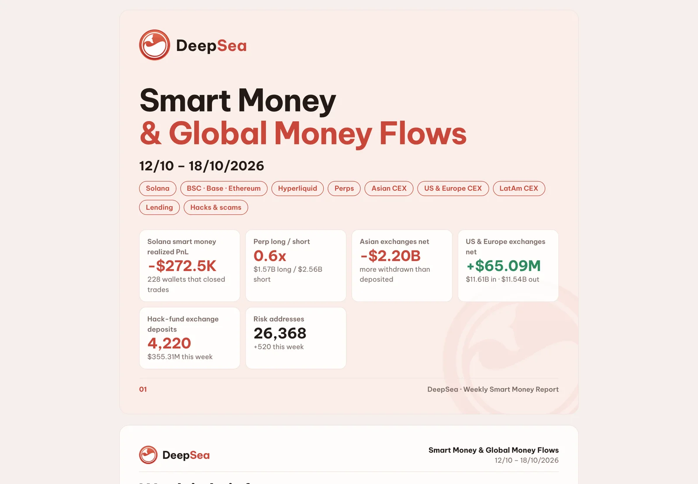
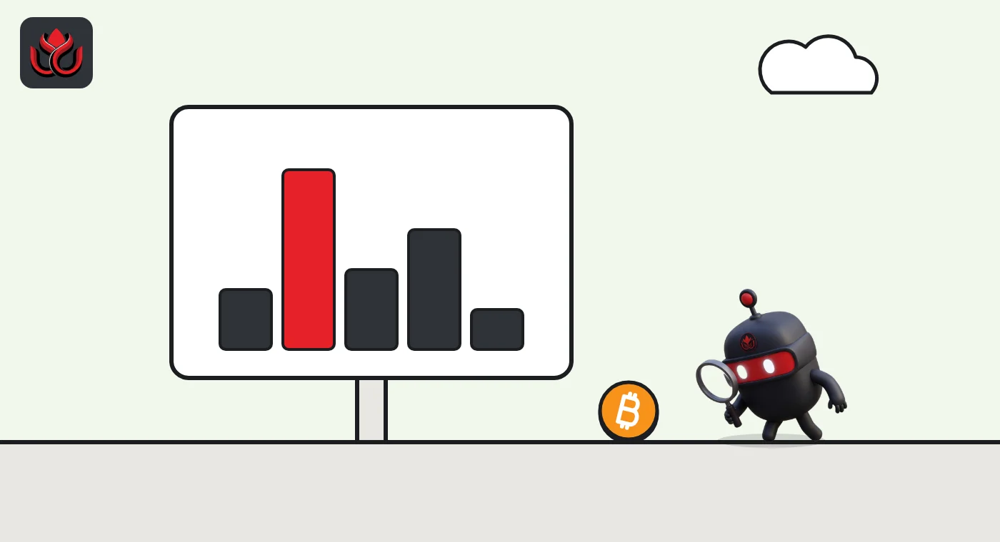

Binance took in 18,435 BTC in two weeks while $6.81 billion in stablecoins walked out
DeepSea's data shows about $1.5 billion in bitcoin flowing into Binance in early October, just as billions in USDT left. Kraken saw the opposite, and the price fell anyway.
Key points
- Binance took in a net 18,435 BTC from October 5 to 18, about $1.5 billion at CoinGecko's price at the start of October 18, DeepSea's data shows.
- In the same two weeks, a net $6.81 billion, mostly USDT, left Binance, while Kraken lost a net 5,798 BTC.
- Bitcoin fell about 9% over four weeks. Binance took a fresh reserves snapshot at 8:00 p.m. ET on October 30 and expected the report on November 2.
 What DeepSea's data shows
What DeepSea's data shows
DeepSea counts bitcoin flows in BTC, separately from its dollar figures. Its report for October 5 to 11 shows Binance taking in a net 3,737 BTC (51,666 in, 47,929 out). The following week the net intake jumped to 14,698 BTC (47,350 in, 32,652 out). Together that is 18,435 BTC in two weeks, all from DeepSea's own data.
Over the same two weeks, Bybit added a net 5,603 BTC by DeepSea's count, while OKX lost 1,424 BTC. In the US, Kraken lost a net 5,798 BTC (4,021 and then 1,777).
DeepSea also maps the biggest routes. In the week to October 11, its largest single route was 9,504 BTC from an unnamed wallet cluster, numbered 0959, into Binance. The second largest was 7,611 BTC from the OCEAN mining pool to Kraken. OCEAN also sent 1,886 BTC to Binance.

Data: DeepSea (desea.io), checked November 1, 2026, 11:35 p.m. ET.
What happened
Binance took in a net 18,435 BTC in the two weeks from October 5 to 18, according to DeepSea's on-chain data. At the same time, stablecoins poured out: minus $4.69 billion net in the week to October 11 and minus $2.12 billion the week after.
The bitcoin intake sped up. It rose from 3,737 BTC in the first week to 14,698 BTC in the second. At CoinGecko's price of $81,408 at the start of October 18, the total was worth about $1.50 billion. That is roughly a fifth of the dollars DeepSea shows leaving Binance in the same two weeks.
Why it matters: exchange flows are one of the few public windows into what big holders are doing. Coins sent to an exchange are often, though not always, coins someone may want to sell or use as collateral. Coins leaving an exchange are often headed to long-term storage.
How other exchanges compare
The pattern was not the same everywhere. DeepSea's figures for October 12 to 18 show Bybit at plus 3,202 BTC, Gate at plus 341 BTC, OKX at minus 964 BTC and Crypto.com at minus 191 BTC. Japan's Coincheck and Bitbank were roughly flat.
Kraken, the only US and European venue in DeepSea's bitcoin tables, went the other way. It lost a net 4,021 BTC in the week to October 11, even after taking in 7,611 BTC from the OCEAN mining pool. It lost another 1,777 BTC the next week, DeepSea shows.
Net bitcoin flow, October 5 to 18
BTC
Source: DeepSea weekly reports for October 5 to 11 and October 12 to 18.

What the price did
Bitcoin did not rally on the inflow. CoinGecko shows it at $86,490 at the start of October 5, $81,408 at the start of October 18 and $78,659 on the morning of November 2. That is a drop of about 9% over four weeks.
The steepest fall came on October 29. That afternoon, at about 4:05 p.m. ET, Binance's hot wallets were compromised, Binance said. CoinGecko's daily closes show bitcoin going from $81,274 at the end of October 28 to $77,839 at the end of October 29.
That fits the usual reading of exchange inflows as supply arriving for sale, but it does not prove it. Large deposits can also be collateral for futures trades, transfers between an exchange's own wallets, or coins parked by institutions that trade through Binance.
What Binance says about its reserves
Binance's own reserve figures cannot yet be set against DeepSea's two-week intake. In a November 1 update, Binance said it took a new proof of reserves snapshot at 8:00 p.m. ET on October 30 and had started the zero-knowledge proof work. It expected the report on its proof of reserves page on November 2. Proof of reserves is a check that an exchange holds the coins it owes its users.
The same post gave a first look at flows after the breach. Binance began restoring withdrawals in phases at 1:00 a.m. ET on November 1. Between 1:00 a.m. and 10:30 a.m. ET, it processed $4.649 billion of withdrawals and $1.01 billion of deposits, a net outflow of about $3.64 billion. Binance put that at 2.1% of $171 billion in assets under management, based on its proof of reserves data as of October 28.
DeepSea's live exchanges page showed Binance's tracked wallets holding $147.81 billion on November 2. Of that, $88.08 billion was in native coins such as BTC and ETH, with a net flow of minus $1.55 billion over seven days. DeepSea says this covers 392 wallets on 17 chains. That is its own coverage, not Binance's official total, which explains much of the gap with the $171 billion figure.
LC Insight analysis
This section is our reading of the facts above, not a statement of fact.
- The split is the story: dollars left Binance while bitcoin arrived. One plausible reading is that some large holders moved BTC onto the exchange to sell or borrow against it, while others pulled stablecoins out to use on-chain.
- One unnamed cluster sent 9,504 BTC in a single week, the biggest piece of the puzzle. Until it is identified, we would not read the inflow as a clear sell signal.
- Kraken's steady bitcoin outflow, even after a large mining-pool deposit, suggests its US clients were taking coins into their own custody rather than selling.
What's next
- DeepSea's next weekly bitcoin flow table, which will show whether the Binance intake continued around the October 29 breach
- Binance's report on its October 30 reserves snapshot, which should show its bitcoin holdings after the breach
- Whether the wallet cluster behind the 9,504 BTC transfer is identified
Disclaimer. This article is based on public information and the sources listed below as of the update time shown. It is for information only and is not investment, legal or tax advice. Figures may change as companies and authorities publish new data.
Sources
- DeepSea, Weekly Smart Money & Global Money Flows Report, October 5 to 11, 2026
- DeepSea, Weekly Smart Money & Global Money Flows Report, October 12 to 18, 2026
- DeepSea, Exchanges (checked November 2, 2026)
- CoinGecko, Bitcoin historical data
- Binance on X, Security Incident Recovery Update #2 (October 30, 2026)
- Binance on X, withdrawal and proof of reserves update (November 1, 2026)